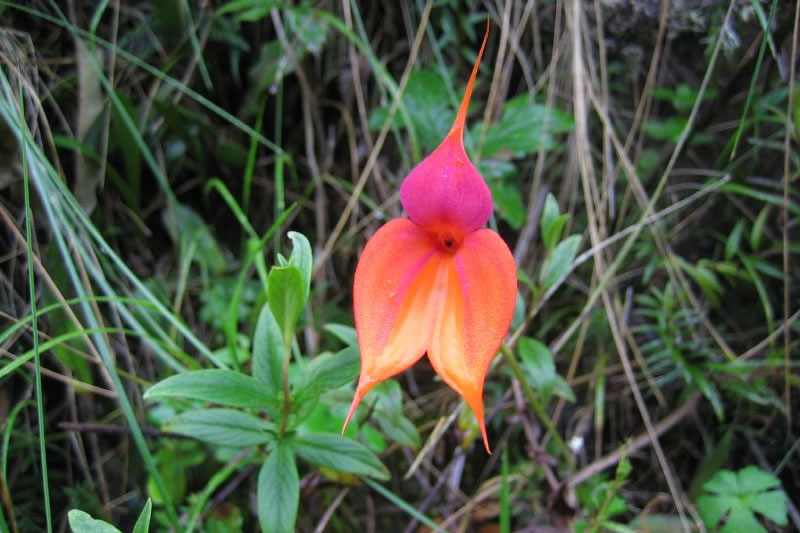

El Santuario Histórico de Machu Picchu y el Camino Inca, se caracterizan por tener una flora silvestre diversa y tiene especies de zonas alto-andinas, como de selva. Sobresalen especies con el polylepis, helechos, arbustos, orquídeas y flora vascular. Se considera que existen 50 especies de árboles por hectárea, se han registrado casi 200 especies de orquídeas, zonas de musgo y pasto, bambúes, áreas de cultivo, bromelias, especies madereras, como el cedro y el laurel. También se encuentran arbustos, como la muña, el Pisonay Erythrina falcatas, variedad de begonias y puyas. Finalmente, se encuentran variedad de plantas alimenticias y medicinales.
Las Orquídeas
El nombre científico de las orquídeas es: orchidaceae. Es una de las flores más expandidas en el mundo. Sus flores se distinguen por la belleza de su color así como la simetría de sus pétalos. Se calcula que existen hasta 30 mil especies en todo el mundo. Esta flor puede crecer en diversas geografías del mundo excepto las áreas desérticas o de intenso frío. A lo largo del Camino Inca se han registrado 400 especies de orquídeas, aproximadamente. Quizá una de las más famosas es el ‘Wiñayhuayna’, nombre que también recibe uno de los sitios arqueológicos que los incas construyeron a lo largo del camino.
Otra de las especies de orquídeas más famosas del Camino Inca es el ‘Waqanki’. Sobre esta flor existe una leyenda inca que cuenta que un soldado se enamoró de la hija del inca. El emperador castigó al plebeyo al mandarlo a una guerra. La princesa inca dejó caer lágrimas en la búsqueda por su amante. Entonces, de sus lágrimas en el suelo florecieron las orquídeas denominadas ‘Waqanki’ (lágrimas en lengua quechua).

Los Molles
El nombre científico de los molles es: schinus molle. Es uno de los arbustos más cultivados, no solo en el Camino Inca, sino en toda la región andina de Sudamérica. Estos árboles alcanzan entre los 6 y 8 metros de alto. Su tronco puede medir hasta 30 centímetros. Posee ramas de frondosas hojas. Las investigaciones señalan que es de origen andino: en los Andes centrales y el altiplano de los actuales países de Perú, Chile, Bolivia y Argentina. Sin embargo, actualmente se distribuyen en varios países del mundo. La razón es su resistencia a las altas temperaturas y a los climas secos. A lo largo del Camino Inca, especialmente en la zona andina (primeros días) es común toparse con estos arbustos. Los pobladores andinos suelen utilizar sus hojas con fines analgésicos y cicatrizantes.

A continuación conozca la flora más representativa de esta ruta.
- Las orquídeas
- Los Molles
- Loa Cedros
- Los queñuales
- Los helechos
- Las puyas
- Los floripondios
- Los claveles